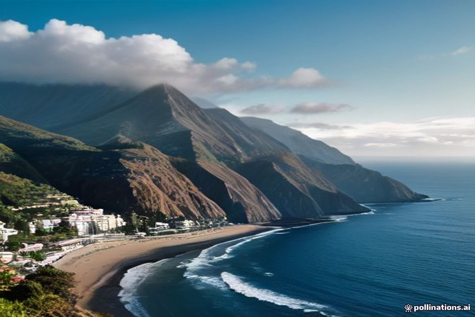
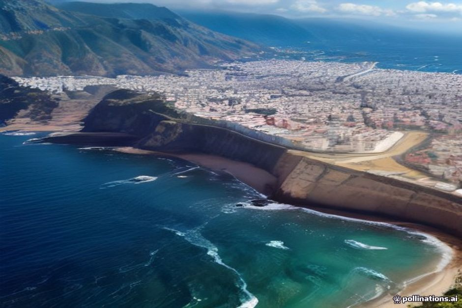

Ask when to book a boat trip in Madeira and the honest answer is almost always summer — June through August brings the warmest, calmest Atlantic of the year and the longest days on the water, even if it also brings the biggest crowds. Here's what the season actually looks like, month by month.
Is Madeira hot in summer?
Warm rather than scorching. Funchal's daytime highs sit around 24°C in June, climbing to roughly 26°C in July and peaking near 27°C in August, with nights rarely dropping below 18–19°C. Because Madeira sits in the mid-Atlantic rather than on the Iberian mainland, it skips the heatwaves that hit Lisbon, Seville or the Algarve in July and August — locals joke that the island's "eternal spring" nickname holds even in the hottest month, since 27°C with a sea breeze feels nothing like the same number inland. Shorts, sandals and a swimsuit cover nearly every day of the season.

Is the sea warm enough to swim in Madeira in summer?
Yes, and it keeps improving through the season. The Atlantic around Madeira is slow to warm, so June sits at around 21°C, July climbs to roughly 22–23°C, and August reaches about 23–24°C — still short of its yearly peak, which actually lands in September as the ocean keeps absorbing heat after the air has already cooled. Summer also brings the calmest Atlantic swell of the year, which matters more than the last degree or two of water temperature: it's exactly why swim stops at Fajã dos Padres and Ribeira Brava on our Day Trip are at their most reliable and their clearest for snorkelling between June and August.
Does it rain a lot in Madeira in summer?
Barely at all. June, July and August are the driest months of the year on the south coast, and Funchal typically goes long stretches without measurable rainfall through the whole season. The north coast — Santana, São Vicente, Porto Moniz — still picks up more cloud than the south thanks to Madeira's usual microclimate split, but even there summer is the calmest, driest window of the Madeiran calendar. It's the one season where checking the forecast is more about sun intensity than the risk of a washed-out day.
What's on in Madeira in summer?
This is the island's festival season. June opens with the Festival do Atlântico, four Saturday nights of pyromusical fireworks over Funchal Bay, and closes with bonfires on the pebble beaches for São João on the night of 23 June. July brings open-air music at Parque de Santa Catarina and small, distinctly Madeiran events like the limpet festival in Paul do Mar. August is the busiest month of all: the Assumption holiday on 15 August fills every parish with processions and fireworks, and by the last week of the month the harvest-driven Madeira Wine Festival is already underway in Câmara de Lobos. None of it needs advance planning to enjoy from the coast — it's a bonus layered on top of a trip already built around the water and the mountains.

What should you pack for a summer trip to Madeira?
Sun protection first. Reef-safe sunscreen, a hat and a light long-sleeve layer for the boat matter more in summer than any jacket — the Atlantic sun is stronger than it feels with the sea breeze cutting the heat. Pack a swimsuit and water shoes for the volcanic rock coves, and one warmer layer for the evenings, since Funchal cools noticeably after dark and anywhere in the mountains — Pico do Arieiro, Pico Ruivo — can feel properly cold even in August. Comfortable trainers cover the levadas, which stay dry and fast-moving all season.
Is summer the best time to visit Madeira?
For guaranteed warm swimming, the calmest seas and the longest daylight hours, yes — summer is hard to beat. The trade-off is that it's also the island's busiest and most expensive season: flights, hotels and boat trips all book up weeks in advance, especially the sunset cruise on July and August evenings. If crowds and price matter more to you than an extra degree of sea temperature, late spring or September offer nearly identical warmth with far more availability. If summer is when you're travelling regardless, the fix is simple — book the boat and the restaurant table before you land, not after.
Summer doesn't make Madeira better. It just makes the water impossible to say no to.
Whichever week you land, check the forecast a day or two out rather than trusting a seasonal average — Madeira's microclimates mean a hazy morning in Funchal can turn into the clearest afternoon of the trip out on the water.